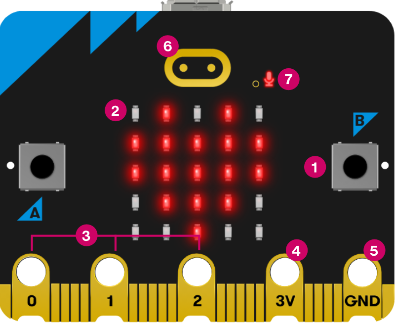

The BBC micro:bit V2 — front
Scroll down to explore the main components.
This is the complete front of the board — roughly the size of a credit card. The numbered labels identify each feature. We will work through them one by one.
The 5×5 LED matrix is the most visible feature on the front. 25 individually controllable red LEDs can display scrolling text, numbers, arrows, and custom images. The matrix also works as a light sensor — it can detect ambient brightness without any extra components.
Button A is on the left side of the board. In MakeCode, pressing it triggers an on button A pressed event. You can programme any action in response — displaying a reading, toggling a light, or sending a radio message.
Button B mirrors Button A on the right. You can programme A and B independently, or detect when both are pressed together for a third action.
The gold touch logo at the top is a capacitive touch sensor — unique to the V2. Your finger doesn’t need to press it: just touching it is enough.
The small dot to the right of the logo is the microphone activity LED. It lights up whenever the built-in microphone is recording — a privacy indicator so you always know when sound is being measured.
The gold band along the bottom is the edge connector. The three large holes — labelled 0, 1, and 2 — are general-purpose input/output pins: connect sensors here with crocodile clips or the Sensorbit. 3V supplies power to connected components; GND completes the circuit.
That covers the front. Now let’s flip it over.
The BBC micro:bit V2 — back
Most of the processing and sensing happens here.
Here is the full back of the board. The large chips, the antenna trace, and the connectors are all visible. We will go through each in turn.
The gold zig-zag trace in the top left is the Bluetooth and radio antenna — printed directly onto the board, no separate component needed. It handles both Bluetooth Low Energy (for phone connectivity) and the micro:bit’s own 2.4 GHz radio protocol (for micro:bit-to-micro:bit communication).
The micro USB port at the top centre is how you connect the micro:bit to your laptop to download programmes. It also powers the board from USB. When you drag a .hex file onto the MICROBIT drive, it enters through this port.
The square component in the centre is the speaker. It can play tones, melodies, and sound effects directly, with no extra wiring. In MakeCode, use the Music category.
The small component close to the speaker is the backside of the microphone — on the front you will see it as a little whole. It detects sound level and can recognise loud events such as claps or shouts. The LED you saw on the front indicates when it is active.
The battery connector on the right edge accepts a standard 2× AAA battery pack. This is how you power the micro:bit away from a laptop — essential for portable projects and demos.
The chip left of the speaker is the processor — a Nordic nRF52833 running at 64 MHz with 512 KB of flash memory. Your programme lives here. It also contains a built-in temperature sensor that measures the chip temperature — a rough proxy for air temperature.
The two chips on the bottom left are the accelerometer and compass. The accelerometer measures forces in three dimensions — tilt, shake, freefall, movement. The compass detects magnetic north. Both are available as built-in sensor blocks in MakeCode, no extra wiring needed.
That is the complete micro:bit V2. Front and back, now you know what every component does.
